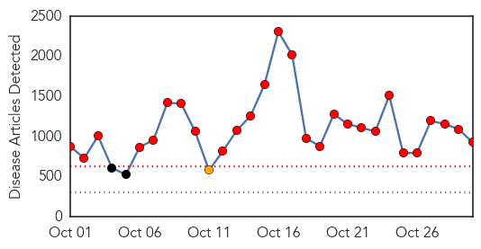
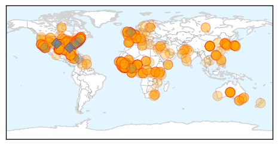

Ebola
30-Day Web Trend
27 alerts, 1 warnings

30-Day Twitter Trend
15 alerts, 11 warnings
Article Locations
Article Confidences
Top Articles:
- 1.000
- Quarantines rarely used, effectiveness questioned
- 1.000
- In Guangdong, nervy Chinese ramp up Ebola watch
- 1.000
- Ebola: Danger in Sierra Leone, progress in Liberia
- 1.000
- Ebola: health fears stop British journalist from hosting awards
- 1.000
- Latest Ebola News: Ebola vaccine to be ready in the next five years
- 1.000
- Ebola in US: Obama calls Ebola nurse following her defense
- 1.000
- Ebola in Sierra Leone: Traditional leaders warned to contain Ebola spread
- 1.000
- Don't panic: Arm yourself with facts about Ebola
- 1.000
- Pacific “prepared” to face Ebola
- 1.000
- In Guangdong, nervy Chinese ramp up Ebola watch
- 1.000
- New cases of Ebola declining
- 1.000
- Oxfam launches Ebola appeal to stop disease’s deadly advance
- 1.000
- US Health Care Unprepared for Ebola
- 1.000
- Ebola death toll tops 4,900
- 1.000
- China Ramps Up Anti-Ebola Efforts
- 1.000
- Liberia Ebola crisis far from over , says WHO
- 1.000
- Ebola Cases Slow in Liberia, but Too Soon to Celebrate — Naharnet
- 1.000
- El Camino readies for Ebola
- 1.000
- Ebola cases slow in Liberia, but too soon to celebrate: WHO
- 1.000
- Second Dallas Nurse With Ebola Released From Hospital- MedicineNet
- 1.000
- How Outbreak Started from Single Child
- 1.000
- In Guangdong, nervy Chinese ramp up Ebola watch
- 1.000
- Is U.S. ready to stop Ebola?
- 1.000
- Panic Over Virus Looks A Lot Like Early AIDS Hysteria
- 1.000
- Experts urge caution over Ebola hopes
- 1.000
- CDC Removed Info On Coughing And Sneezing From Ebola Q&A (UPDATE)
- 1.000
- Genesis and rise to global health threat
- 1.000
- US health care system unprepared for Ebola News -- GOPUSA
- 1.000
- In Many Countries, Distance From Ebola Brings A Sense Of Safety
- 1.000
- Research Institute Targets Ebola, Other Infectious Diseases
- 1.000
- President Barack Obama calls Ebola nurse Amber Vinson after hospital release
- 1.000
- Will Ebola kill you? It depends on your genes
- 1.000
- California is latest state to impose 21-day quarantine for those exposed to Ebola
- 1.000
- China offers 4th batch of aid to Africa in anti-Ebola efforts
- 1.000
- Ebola: Danger in Sierra Leone, progress in Liberia
- 1.000
- In Ebola fight, no two quarantines are quite the same
- 1.000
- If Ebola batters United States, we are not prepared
- 1.000
- UB Reporter: Need to know news and views for UB faculty and staff
- 1.000
- Fedhealth's Peter Jordan on Ebola – lessons to learn to beat virus
- 1.000
- Ebola – cases slow in Liberia but too soon to celebrate, says WHO
- 1.000
- Fearing Ebola? Doctors say get a flu shot
- 1.000
- Ebola appears to be slowing in Liberia
- 1.000
- Fearing Ebola? Doctors say get a flu shot
- 1.000
- Vermonter voluntarily quarantined after trip to West Africa
- 1.000
- Stopping Ebola: Mali Matters; Maine and Manhattan Don't
- 1.000
- Experts urge caution over Ebola hopes
- 1.000
- Ebola Scare is Similar to a Zombie Movie
- 1.000
- Nation torn on returning Ebola workers
- 1.000
- Fearing Ebola? Doctors say get a flu shot
- 1.000
- Larson named AP's West Africa bureau chief
Showing top 50 articles...
Top Tweets:
- 0.982
- RT: Flu and Ebola have some similar symptoms, but flu is common, Ebola is very rare. http://t.co/QTmauZZdUF getafluvax
- 0.975
- RT: A reminder from: Flu & Ebola have some similar symptoms, but flu is common, Ebola is very rare. http://t.co/0tlJ2WNDV…
- 0.941
- RT: We are hiring! Nurse (EVD - Ebola Virus Disease Treatment Team) via Relief Web - Eldis http://t.co/vomxL3UVrb workwit…
- 0.935
- RT: Ebola crisis numbers, 22 Oct. 2014. endebolanow ebola SierraLeone guinea liberia senegal nigeria spain usa http:/…
- 0.913
- RT: Démonstration à Asklepios Klinik Altona, Hambourg. Unité de prise en charge des maladies infectieuses comme Ebola. htt…
- 0.894
- RT: See the latest Ebola Virus Disease Outbreak SierraLeone factsheet from as of 28Oct14 http://t.co/JwDmyDHbC7 http:/…
- 0.894
- RT: See the latest Ebola Virus Disease Outbreak SierraLeone factsheet from as of 28Oct14 http://t.co/JwDmyDHbC7 http:/…
- 0.894
- RT: See the latest Ebola Virus Disease Outbreak SierraLeone factsheet from as of 28Oct14 http://t.co/JwDmyDHbC7 http:/…
- 0.885
- Ebola author David Quammen spoke to Ebola Deeply on globalization and viral epidemics http://t.co/YVkIS1zQjJ
- 0.799
- Clinicians: CDC’s Dr. Srinivasan shares tips for treating potential Ebola patients as flu season begins: http://t.co/F59nj6W89h
- 0.797
- Ebola : le co-découvreur du virus, Peter Piot, redoute une propagation en Chine http://t.co/ppDVKCiVEX
- 0.795
- RT: More outbreak responders feel Ebola quarantine impact http://t.co/S3TAmRVAJP
- 0.766
- VIDEO. Ebola : comment le virus infecte l'organisme http://t.co/6p4QpPDucu
- 0.763
- RT: Clinicians: CDC’s Dr. Srinivasan shares tips for treating potential Ebola patients as flu season begins: http://t.co/F59nj6W89…
- 0.756
- RT: EBOLA : elles dansent pour lutter contre le virus ShakeEbolaOff: http://t.co/bFqM4f4nb0 via
- 0.747
- The Ebola questions http://t.co/52APZ2Ktvy
- 0.747
- The Ebola questions Ebolaresponse http://t.co/QrzgzSacKk
- 0.746
- RT: Miwako & Jonathan trained staff at Liberian hospital that closed due to 22 Ebola infections in HCWs. CDCintheField http://t.c…
- 0.732
- Dr. Bill Foege on Ebola: “Working w/ best info available, public health workers continue to change strategies.” http://t.co/CxSNcAArkw
- 0.731
- New Ebola Q&A w/ CDC’s Dr. Srinivasan addresses clinician concerns as flu season begins. Watch here: http://t.co/F59nj6W89h
- 0.710
- Thanks for clarifying MT: 6 authors of article on Ebola in Sierra Leone died of EVD, one of another cause. Tragic.
- 0.704
- More than 1,000 people have beaten Ebola in treatment centres across West Africa! Story: http://t.co/mVz2g6IHDt EbolaChallenge
- 0.697
- She went to West Africa to help Ebola patients. That's not selfish.
- 0.677
- Miwako & Jonathan trained staff at Liberian hospital that closed due to 22 Ebola infections in HCWs. CDCintheField http://t.co/FEdV8aSb9Z
- 0.675
- Best approach to minimize global risks is to control the Ebola outbreak at its source - @IRINnews on EbolaResponse http://t.co/CNmnBYfgUO
- 0.661
- RT: To stop Ebola's spread in West Africa, target funerals: study http://t.co/InJzDq7iwX
- 0.654
- Obstacles prevent health workers from providing timely care 2 Ebola patients, what's ur solution? http://t.co/TLqVpENLQO fightingEbola
- 0.645
- (Palo is DefMin) MT: @BBCAndrewH: SaLeone Gvt Ebola boss Palo Conteh tells me British effort "a game changer" in fight against outbreak.
- 0.636
- Clinical Illness and Outcomes in Patients with Ebola in Sierra Leone http://t.co/fZRBHR6K5m
- 0.634
- RT: Best approach to minimize global risks is to control the Ebola outbreak at its source - @IRINnews on EbolaResponse http://t.co…
- 0.631
- Many Mysteries Still Surround Ebola http://t.co/YbQowYb56d
- 0.624
- Ebola in Sierra Leone - the ‘don’t touch!’ rule http://t.co/OkfaoViilZ
- 0.613
- RT: Volunteer rate 4 hlth wrkers Ebola SO far behind needs, in pt due 2 fears of quarantine & no Medevac: incentives. htt…
- 0.598
- RT: .@UNICEF provided water tanks to an Ebola Treatment Unit; water is key to maintain hygiene and prevent contamination http://…
- 0.562
- The doctors and nurses at Emory have successfully taken care of 4 patients with Ebola. Should the Emory team be quarantined?
- 0.546
- Dr Fatoumata Nafo-Traoré of RBM said efforts to contain malaria may be jeopardised by Ebola crisis http://t.co/5zjLiC7hqe
- 0.538
- Here’s what scientists know about Ebola in Sierra Leone http://t.co/Y1sg60GEr4 TackleEbola
- 0.524
- MT: (UK Ship) Argus docks Freetown Sierra Leone with supplies for British and local teams fighting Ebola. http://t.co/lGBEqPFeD0
- 0.523
- RT: Modeling Ebola in Mice: A genetically diverse group of mice represents the spectrum of human outcomes from Ebola. http…
- 0.522
- Saying she will not be bullied, nurse fights Maine Ebola quarantine http://t.co/W6zwNKTLVZ
- 0.513
- Ebola: Danger in Sierra Leone, progress in Liberia http://t.co/Ru3wNAbAHR TackleEbola http://t.co/rUEcVHqWtD
- 0.505
- RT: Scale of Ebola epidemic in Guinea forces WFP into uncharted territory http://t.co/ta5cSi2S8w
- 0.501
- Ebola Triage Screening and Public Health: The New “Vital Sign Zero” http://t.co/Xm3W67tgGm
Pertussis
30-Day Web Trend
0 alerts, 0 warnings
30-Day Twitter Trend
0 alerts, 0 warnings

Article Locations
Article Confidences

Top Articles:
Top Tweets:
-
No tweets found for Oct 30, 2014